فحص الواجهة بالبكسل
صوّرت كل أنواع الصفحات (الرئيسية، قسم، ذكر، الطب النبوي، حديث، ٤٠٤، البحث، قائمة الأقسام) على أربعة عروض: هاتف ٣٩٠، آيباد ٨٢٠، آيباد برو ١٠٢٤، حاسوب ١٤٤٠، فاتحًا وداكنًا، في كروميوم وفي ويبكِت (محرك سفاري). ثم قست كل حافة ومسافة بالبكسل من الصفحة نفسها، لا من الصورة. وجدت ستة أمور، كل واحد منها مثبت بقياس وصورة.
ما بُني: الستة كلها بالخيار أ
أعدت القياس بعد البناء على الصفحة نفسها. كل رقم أدناه مقيس، والفحص الكامل (التنسيق والفحص والأنواع و٣٩٩٥ اختبارًا و٩١ اختبار بناء) ناجح.
الرئيسية لم تتغير: صورتها قبل وبعد متطابقة، إلا مواضع الرسوم المتحركة التي تختلف بين تصويرين من الكود نفسه.
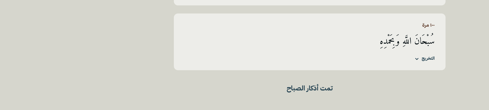
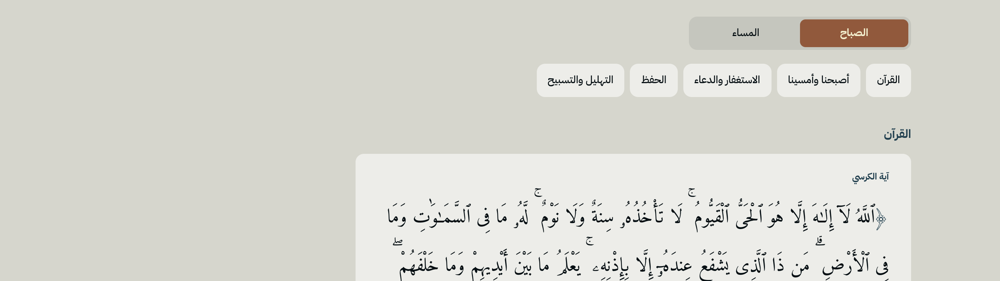
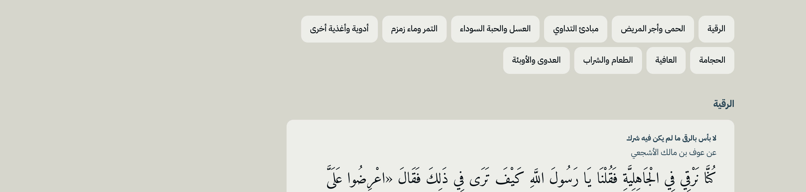
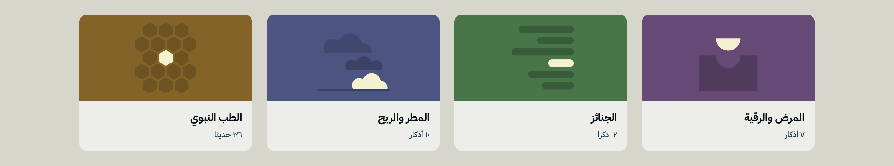
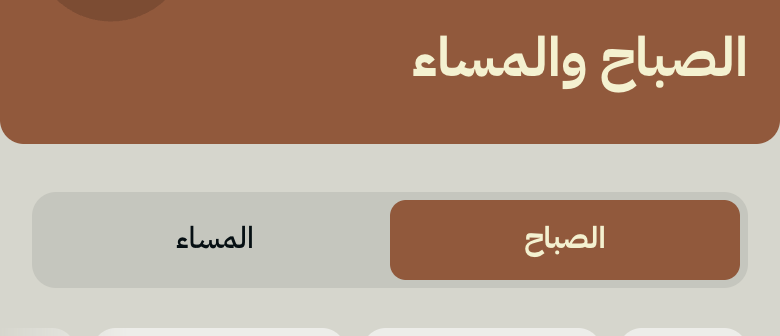
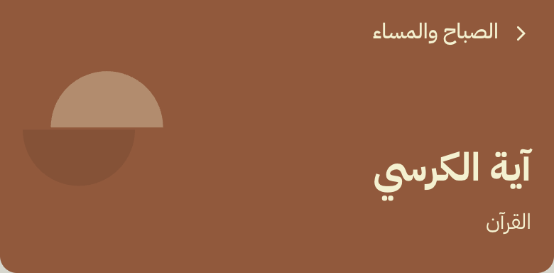
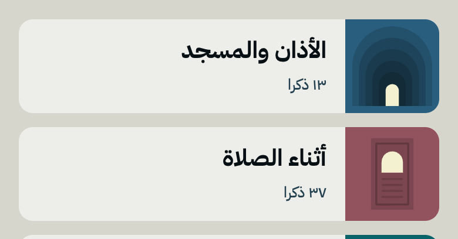
تسميات البطاقة: لكل تسمية معنى واحد وشكل واحد
جمعت كل بطاقات الموقع (٢٨٥ بطاقة في ١٧ صفحة) فوجدت ٢٥ تركيبًا مختلفًا من التسميات. المسافات كانت سليمة ومنتظمة في كل التراكيب. المشكلة في المعنى: السطر الملون كان يحمل أربعة معانٍ (العدد، ووقت اليوم، والموقف، وطريقة القراءة)، ولون القسم نفسه كان لعنوان الصيغة، وكانت العبارات تظهر «١ مرة».
| التسمية | تقول | الشكل |
|---|---|---|
| الاسم | اسم الذكر، إن لم يبدأ نصه به | ١٣px عريض رمادي |
| العدد | كم مرة: «مرة واحدة»، «مرتان»، «٣ مرات»، «٣٣ مرة» | ١٥px عريض بلون القسم |
| الوقت | متى يقال: «في المساء»، «إذا أوى إلى فراشه». في سطر العدد بعد فاصلة | ١٥px عريض رمادي |
| الكيفية | ماذا يفعل، و«تقرأ إلى آخر السورة» | ١٥px عادي رمادي |
| الراوي | «عن ابن عباس» في الطب النبوي | ١٥px عادي رمادي |
| عنوان الصيغة | «الصيغة الأولى»: عنوان فوق بطاقات، مثل عنوان المجموعة | ١٧px عريض رمادي |
لون القسم في البطاقة صار يعني شيئين فقط: العدد، أو زرًا معه أيقونة («نسخ»، «صفحة الذكر»).
المسافات لم تتغير بكسلًا: ٢٤px فوق أول تسمية، و٤px تحت الاسم، و٨px تحت الوقت والكيفية
والراوي. كتبت الجدول في docs/design-system.md، واختبار بناء يرفض أي تسمية
أخرى أو ترتيبًا آخر أو رقمًا خارج العدد أو «١ مرة».
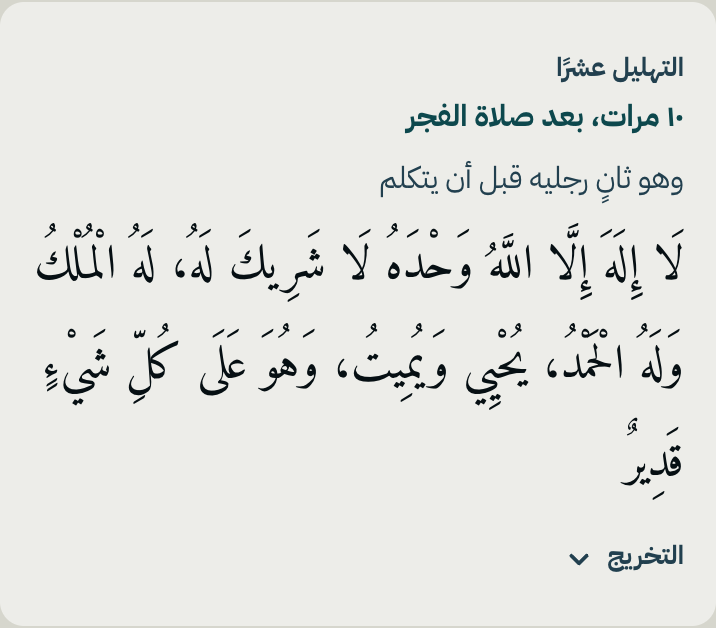
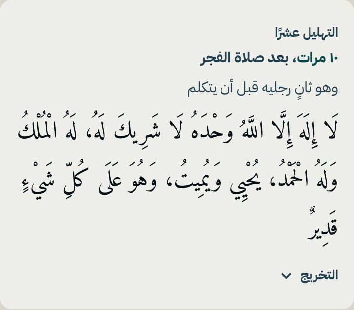
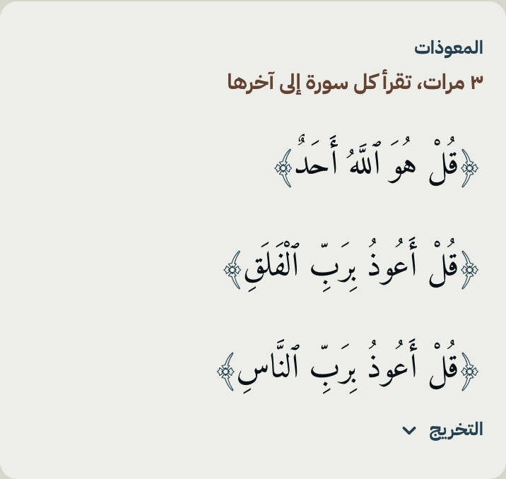
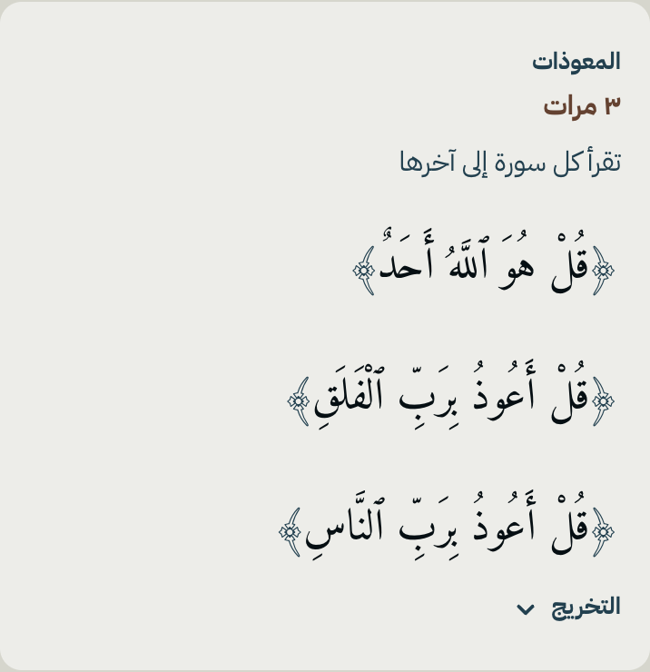
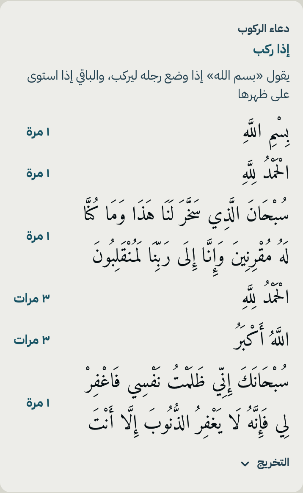
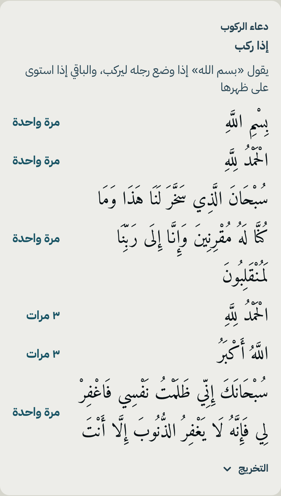
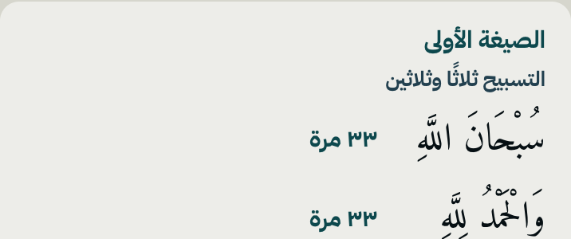
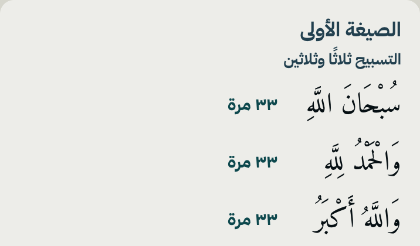
ملاحظة مقيسة: في قسم «بعد الصلاة» (الأخضر المزرق) لون العدد قريب من الرمادي في الوضع الفاتح (مسافة ٠٫٠٣٣ في OKLab، وفي البقية ٠٫٠٥ إلى ٠٫١٢). الكلمات نفسها («١٠ مرات») تقول إنها عدد، فتركته. إن أردت فرقًا أوضح، فالحل أن يكون الوقت بوزن متوسط لا عريض.
الفحص الأول
١. سطر «تمت» ليس في وسط الأذكار التي يختمها
آيباد برو وحاسوبصفحات الأقساممن عرض ٦٤rem تضيق الأذكار إلى عمود القراءة (٨٠٠px) عند اليمين، لكن «تمت أذكار الصباح» يتوسط عرض الصفحة كله. على ١٤٤٠ وسطه عند ٧٢٠px ووسط البطاقات عند ٩١٢px، فهو منحرف ١٩٢px. على ١٠٢٤ ينحرف ٩٦px.
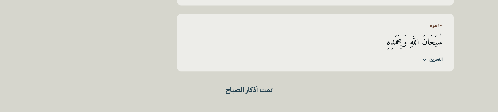
٢. صف التبويبات أعرض من عمود الأذكار
آيباد برو وحاسوبصفحات الأقسام والطب النبويالبطاقات تقف عند ٥١٢px من اليسار، والتبويبات تتجاوزها إلى ٤٢٩px (٨٣px خارج العمود). في الطب النبوي التبويبات تملأ عرض الصفحة كله (١١٨٤px) والبطاقات تحتها ٨٠٠px، فيبدو أعلى الصفحة وأسفلها على شبكتين.
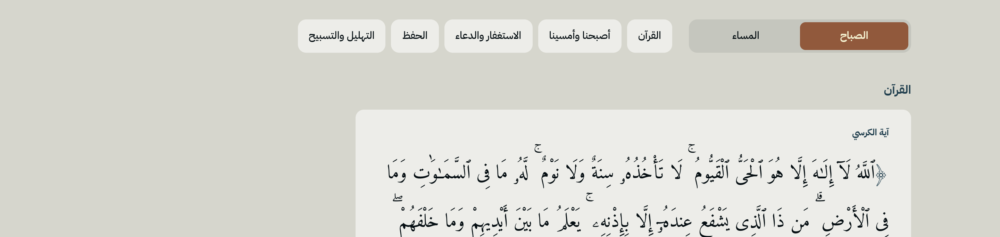
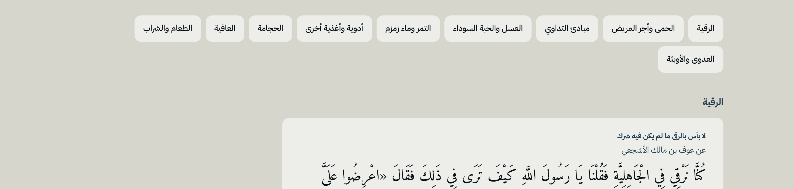
٣. البطاقة الأخيرة في «بقية الأقسام» تمتد بعرض الصفحة
آيباد برو وحاسوبكل صفحات الأقسام
«بقية الأقسام» ست عشرة بطاقة في ثلاثة أعمدة: خمسة صفوف كاملة، ثم بطاقة وحيدة تتمدد إلى
١١٨٤px بمسرح ارتفاعه ٢٤٠px. السبب أن الشبكة مرنة (flex: 1 1 30%) فتكبر الأخيرة
لتملأ الصف، وليست تصميمًا مقصودًا.
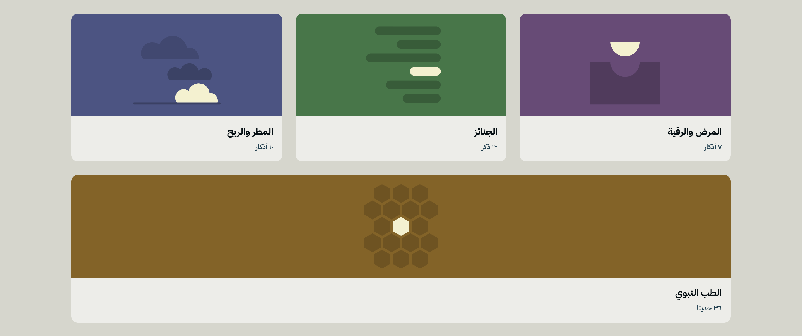
٤. المسافة تحت رأس الصفحة على الهاتف ليست واحدة
هاتفتحت الرأس الملون: ١٦px في صفحات الأقسام والطب النبوي، و٢٤px في صفحات الذكر والحديث. على الآيباد والحاسوب ٢٤px في كل الصفحات.
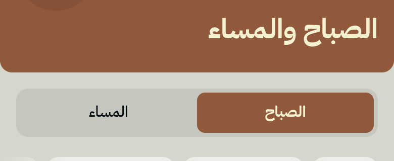
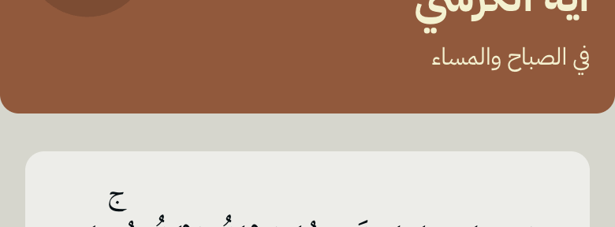
٥. صفحة الذكر تكرر اسم القسم فوق العنوان وتحته
كل العروض٦ صفحات
«الصباح والمساء» فوق «آية الكرسي»، ثم «في الصباح والمساء» تحتها. القاعدة في
docs/design-system.md أن السطر تحت العنوان لا يكرر اسم القسم فوقه. الكود يقارن
النص حرفًا بحرف، و«في الصباح والمساء» لا يطابق «الصباح والمساء» فيمر. الصفحات الست: آية
الكرسي، المعوذات، عالم الغيب، لا إله إلا الله وحده، التهليل عشرًا، سبحان الله وبحمده.
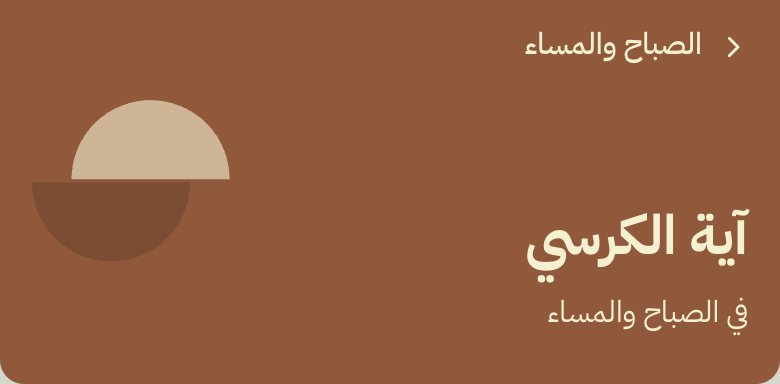
٦. المسافة بين بطاقات الأقسام نفسها ثلاث قيم
هاتف وآيبادأولوية صغيرةفي الرئيسية ١٢px على الهاتف والآيباد. في «بقية الأقسام» ٨px على الهاتف و١٦px على الآيباد. على الحاسوب ٢٤px في الاثنتين. بطاقات «بقية الأقسام» أصغر قصدًا، لكن المسافة لا يلزمها أن تختلف.
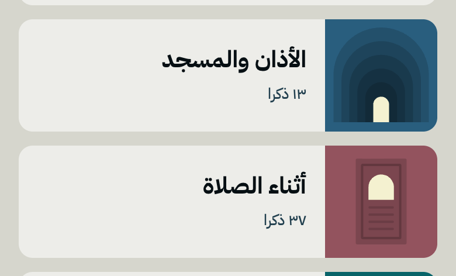
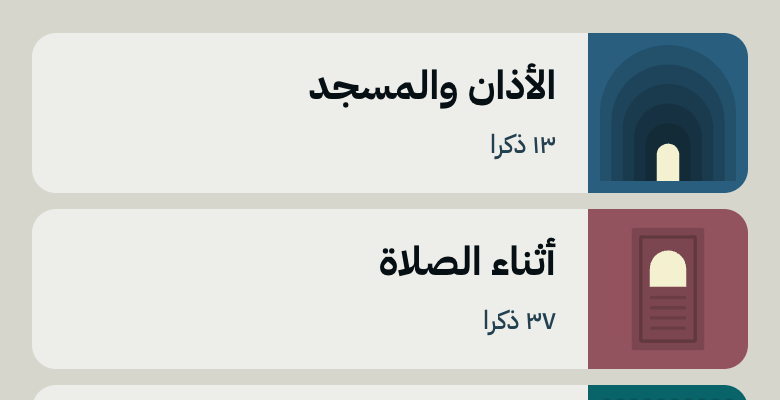
ما قسته فكان سليمًا
- لا تمرير أفقي على أي عرض.
- الزهرة والأيقونات في الشريط على حافة المحتوى تمامًا: ١٦px على الهاتف والآيباد، و١٢٨px على الحاسوب.
- كل زر ورابط ٤٤px أو أكثر. رابط الرجوع في الرأس ومفتاح الصباح والمساء يوسعان منطقة اللمس بما يكفي.
- كل حجم خط من السلم، أو من الحجمين المرنين الموثقين.
- الوضع الداكن بالهندسة نفسها، وويبكِت مطابق لكروميوم.
- البحث وقائمة الأقسام على الهاتف والآيباد والحاسوب.
لم أفحص: جهازًا حقيقيًا أو المحاكي، وحالات المرور والتركيز، والهاتف أفقيًا.
للمعاينة
خادم التطوير على http://localhost:4324. لم أنشئ أي commit.